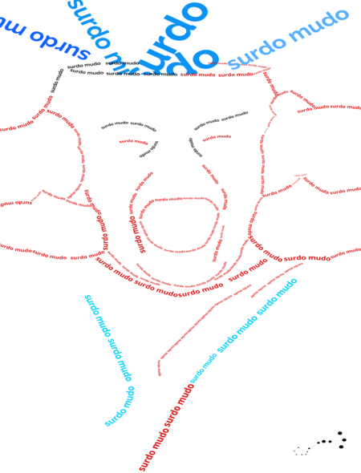

Essa aba tem como finalidade mostrar para os convidados composições visuais que enaltecem a ancestralidade brasileira.
Dito isso aproveitem as composições

×
Nome: Wendel
Nome da Obra: Ancestralidade e Generalização
Descrição: A minha ideia para a construção deste quadro é apresentar a sociedade que a generalização sobre o tema e a ancestralidade que o mesmo deveria passar, pois muito acham que as pessoas são descendentes de escravos por que quis, mas a verdade é que as pessoas são descendentes daqueles que foram escravizados forçadamente.
×
Nome: Nathan Regis
Nome da Obra: Florescer
Descrição: A arte a ser analisada, representa o lado deprimente do ambiente encontrado em
favelas, onde em meio de becos e vielas, onde pouca luz chega, as vezes somente
a baixa iluminação de algumas casas, vidas são tiradas a troco de nada, não
importa quem, quando e por qual motivo. Balas não são perdidas, elas são
encontradas, por costas, testas e peito, florescendo em uma explosão que logo se
murcha mediante ao tempo que os olhos se apagam. Em referência, ao texto Zaita
esqueceu de guardar seus brinquedos, onde em seu final trágico, Zaita perde sua
vida buscando seu brinquedo preferido (uma figurinha de flor), e em vista dela ser
uma criança, retratar a morte como uma flor onde sua vida é tão bela, porém tão
curta.
×
Nome: Lucas Desideirio
Nome da Obra: Surdo
Descrição: O objetivo deste pôster e conscientizar que não devemos utilizar o termo surdo-mudo para se referenciar os surdos, pois este termo é extremamente ofensivo
×
Nome: João Vitor
Nome da Obra: Selvagem de Ninguém
Descrição: é uma obra produzida ao estilo colagem, conta com elementos de figuras religiosas para representar a fé de um futuro melhor. O cenário destaque ao fundo é uma favela, um conjunto habitacional marcado pela elevada densidade demográfica, em sua maioria de pessoas negras; a criança ao canto da imagem surge justamente para representar isso, junto ao símbolo religioso, uma esperança de um futuro melhor.
×
Arte: Davi Ferreira
Nome da Obra: Tempos Novos, Tempos Antigos
Descrição: A ideia dessa composição é mostrar os paralelos do antes de depois da escravidão que vão desde a desigualdade social quanto míseria
×
Arte: Daniel Argolo
Nome da Obra: Raiz de Todo Bem
Descrição: Ao refletir sobre minha origem, minha ancestralidade, me lembro de diversos
tons de cores, principalmente cores quentes, nas flores das plantas, nas
roupas, no céu de tardes que pareciam que iam durar pra sempre, na raiz de
todo meu bem.
×
Arte: Cainã Soarez
Nome da Obra: Flores da Vida
Descrição: demonstra a desigualdade social vigente.
Em um jardim de contrastes da vida, as flores em preto e branco
desabrocham sob o peso da desigualdade e as flores coloridas
desabrocham sob os sonhos e a esperança por um futuro mais
vibrante.
×
Arte: Andrey Rozendo
Nome da Obra: Em Todos Nós
Descrição: No centro da imagem, temos um sinal de igual e várias personalidades que estiveram presentes na luta contra a desigualdade
Não está em apenas um de nós, está em todos nós..." é parte de uma frase dita por Nelson Mandela, um dos grandes nomes de agentes da paz e combatentes do preconceito racial da história”
A frase completa é:
Nascemos para manifestar a glória do Universo que está dentro de nós. Não está apenas em um de nós: está em todos nós. E conforme deixamos nossa própria luz brilhar, inconscientemente damos às outras pessoas permissão para fazer o mesmo
.png)